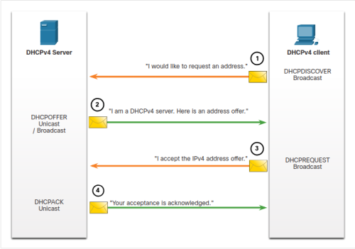
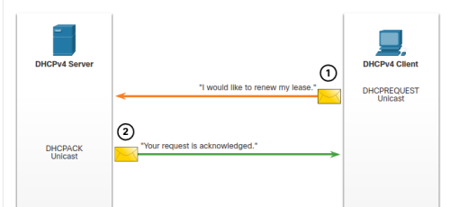

Dynamic Host Configuration Protocol v4 (DHCPv4) assigns IPv4 addresses and other network configuration information dynamically.
When the client boots (or wants to join a network), it begins a four-step process to obtain a lease:
1. Discover message (DHCPDISCOVER)
2. Offer message (DHCPOFFER)
3. Request message (DHCPREQUEST)
4. Acknowledgment message (DHCPACK)

Prior to lease expiration, the client begins a two-step process to renew the lease with the DHCPv4 server, as shown in the figure:
1. DHCP Request (DHCPREQUEST)
Before the lease expires, the client sends a DHCPREQUEST message directly to the DHCPv4 server that originally offered the IPv4 address. If a DHCPACK is not received within a specified amount of time, the client broadcasts another DHCPREQUEST so that one of the other DHCPv4 servers can extend the lease.
2. DHCP Acknowledgment (DHCPACK)
On receiving the DHCPREQUEST message, the server verifies the lease information by returning a DHCPACK.

CONFIGURING DHCPv4 SERVER
Router (config)# ip dhcp excluded-address 192.168.10.1 192.168.10.20
Router (config)# ip dhcp excluded-address 192.168.10.254
Router (config)# ip dhcp pool WLAN-hosts
Router (config)# network 192.168.10.0 255.255.255.0
Router (config)# default-router 192.168.10.1
Router (config)# dns-server 198.51.100.163
Router (config)# exit
MAKING THIS ROUTER A DHCP CLIENT
Router (config)# int g0/0/1
Router (config-if)# ip address dhcp
Router (config-if)# no shutdown
DHCPv4 Relay
C:\Users\Student> ipconfig /release on the CMD Line
C:\Users\Student> ipconfig /renew on the CMD Line
R1(config)# interface g0/0/0
R1(config-if)# ip helper-address 192.168.11.6
R1(config-if)# end
R1#
Dynamic Host Configuration Protocol v4 (DHCPv6)
STATELESS DHCPv6 SERVER
R1(config)# ipv6 unicast-routing
R1(config)#
R1(config)# ipv6 dhcp pool IPV6-STATELESS
R1(config-dhcpv6)# dns-server 2001:db8:acad:1::254
R1(config-dhcpv6)# domain-name example.com
R1(config-dhcpv6)# exit
R1(config)#
R1(config)# interface G0/0/1
R1(config-if)# description Link to LAN
R1(config-if)# ipv6 address fe80::1 link-local
R1(config-if)# ipv6 address 2001:db8:acad:1::1/64
R1(config-if)# ipv6 nd other-config-flag
R1(config-if)# ipv6 dhcp server IPV6-STATELESS
R1(config-if)# no shut
R1(config-if)# end
R1#
C:\PC1> ipconfig /all
STATELESS CLIENT
R1(config)# ipv6 unicast-routing
R1(config)#
R3(config)# interface g0/0/1
R3(config-if)# ipv6 enable
R3(config-if)#
R3(config-if)# ipv6 address autoconfig
R3(config-if)# end
R3#
R3# show ipv6 interface brief
R3# show ipv6 dhcp interface g0/0/1
STATEFUL SERVER
R1(config)# ipv6 unicast-routing
R1(config)#
R1(config)# ipv6 dhcp pool IPV6-STATEFUL
R1(config-dhcpv6)# address prefix 2001:db8:acad:1::/64
R1(config-dhcpv6)# dns-server 2001:4860:4860::8888
R1(config-dhcpv6)# domain-name example.com
R1(config-dhcpv6)#
R1(config)# interface GigabitEthernet0/0/1
R1(config-if)# description Link to LAN
R1(config-if)# ipv6 address fe80::1 link-local
R1(config-if)# ipv6 address 2001:db8:acad:1::1/64
R1(config-if)# ipv6 nd managed-config-flag
R1(config-if)# ipv6 nd prefix default no-autoconfig
R1(config-if)# ipv6 dhcp server IPV6-STATEFUL
R1(config-if)# no shut
R1(config-if)# end
R1#
C:\PC1> ipconfig /all
STATEFUL CLIENT
R1(config)# ipv6 unicast-routing
R1(config)#
R3(config)# interface g0/0/1
R3(config-if)# ipv6 enable
R3(config-if)#
R3(config-if)# ipv6 address dhcp
R3(config-if)# end
R3#
R3# show ipv6 interface brief
R3# show ipv6 dhcp interface g0/0/1
CONFIGURE A DHCPv6 Relay Agent
R1(config)# interface gigabitethernet 0/0/1
R1(config-if)# ipv6 dhcp relay destination 2001:db8:acad:1::2 G0/0/0
R1(config-if)# exit
R1(config)#